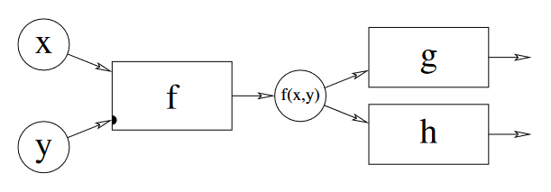
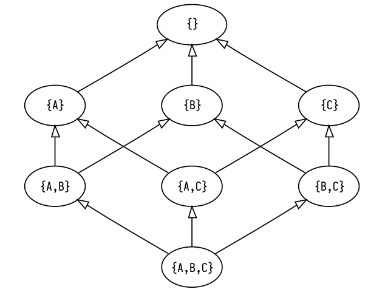

A little while ago I came across this video of Ed Kmett talking about something called propagators. From there I found the paper that originally introduced these things, co-written by Alexey Radul and the venerable Gerald Sussman (which I would highly recommend checking out). Radul's PhD dissertation from the same year is effectively a more thorough and unabridged version of the paper, and also worth reading through if you, like me, become seduced into implementing these yourself.

Propagator networks?
I think the best way to describe propagator networks (or propagation networks — both get used interchangeably) is that they are a model for building computations, somewhere between a design pattern and a programming paradigm. The standard approach to computing has us build a program as a sequential evaluation of expressions, each of which transforms our data or produces some side effects. This obviously works pretty well, but it encourages us to approach problem-solving as a kind of one-way mapping from a known input to an unknown output, and we sometimes have problems that don't fit nicely into this frame. Instead of having one thing that transforms into another, what if we have a bunch of things that "non-linearly" relate or react to one another?
Propagation networks are really great at expressing this latter type of problem. Networks are made up of a bunch of "cells" which accumulate information about a value (I know that's a bit abstract, but bear with me here) and we interconnect these cells with reactive functions called propagators. Propagators link some input cells to some output cells, and when any of the inputs are updated with new information, the propagator pulls in all of the inputs, processes that information in some way and propagates the result to all of the outputs.
This architecture turns out to be pretty flexible and opens up a new kind of expressive power for us. By modelling the flow of information as a graph rather than a sequence or tree, we relax the linear structure of time in our approach to solving a problem. We simply implement relationships or connections between values, and the order in which they are evaluated is determined at runtime.
However, we now have some new pitfalls to avoid. Unless cells have a way to determine whether incoming information is "new" or not, our network will just keep propagating stuff around forever. And since we would probably like our programs to terminate, we need to carefully define decide how to represent this information, and what it means for cells to "accumulate" it.
Time for some math
Before we come up with a concrete implementation for our "partial information", we need to decide what kind of laws it should follow. When a cell gets some new information, we intuitively expect the result to be a logical combination of the information coming in and the information that was already in the cell. And if the incoming information isn't just redundant, we want that combination to be "greater than" either of the inputs on their own, in the sense that it holds more information.
Whenever we need a way to talk about a class of things that follow some abstract rules, it's a safe bet that mathematicians already have an entire field dedicated to what we're looking for. And, lo and behold, this is the case for us here. A set where we can compare elements using the <= relation is called a partial order. And better yet, there's a special type of partial order called a semilattice which includes an operation we can use to combine elements.
Before I start throwing more jargon around let's get a little example going. Say we have a network where we want each cell to settle on one of three values: A, B, or C. The information inside a cell in this case is simple: at any point in time, a cell stores the set of values it could be. We'll initialize the cells with the universal set {A,B,C} and the idea is that some of these elements will get discarded over time until we're down to a singleton, which we can interpret as the final value for the cell. There's a neat little thing called a Hasse diagram which lets us visually represent partial orders. Let's make one for the information in our cells.

The arrows between elements in the Hasse diagram indicate the ordering between elements. We can say that x <= y if there is a direct path from x to y in the diagram (or they are the same). Note that it doesn't really make sense to ask whether {A, B} or {A, C} is "greater" than the other, which is why our information is a partial order not a total order! You should be able to see how the elements contain more information (or less entropy, if that makes more sense to you) as we move up the graph.
The semilattice operation I mentioned that let's us combine elements is called "join" (since we are specifically dealing with join-semilattices; there's a dual operation called "meet" for, you guessed it, meet-semilattices). What join actually does is gives us the "least upper bound" for two elements of the semilattice, which is the least element that is greater than both of the operands. For example, the least upper bound of {A,B} and {B,C} in the diagram above is {C} so {A,B} ∧ {B,C} == {C}.
You might have noticed by now that the top of the Hasse diagram has an empty set element {}, which doesn't really correspond to a value. In practice, if our cell holds the empty set, it means there are no possible values that the cell could be, and that our problem is unsolvable! In other words, moving above the row of singletons means that we've encountered some kind of contradiction, in which case we immediately stop propagating and indicate that our computation has failed.
Ok that was a lot of explaining, but now we get to actually put all of this into practice!
Constraint satisfaction problems
Radul picks out a few different subdisciplines which all share a kind of non-linear approach to computing, and thus generalize very nicely to propagation networks, but the one I'm the most drawn to at the moment is constraint satisfaction problems.
In a CSP, you have a bunch of variables and some rules for how those variables relate to each other (called constraints), and the goal is to assign a value to each variable such that all of your constraints are satisfied. This obviously maps super nicely onto propagator networks. We'll create a cell for each variable, which will store information about what the variable could be (i.e. a set of possible values). Between these cells we install propagators which enforce the relations by translating between sets of possibilities. Each cell is then able to refine its possibility-space by taking the intersection of the incoming sets, ideally culminating in a single value.
Vertex coloring
Let's look at a nice simple CSP and how we would solve it with a propagator network. A sudoku puzzle is the typical example of a CSP that most people are familiar with. But I want to draw everything out visually, and with a sudoku puzzle there are just so many nodes and connections that it becomes kind of a mess to look at, so instead I'm going to walk through an example using vertex coloring (sudoku is actually a specific case of vertex coloring using 9 "colors" on a big graph with 81 vertices and 810 edges).
We'll be finding a 3-coloring of a Petersen graph, which looks like this:

And here is the code that will solve our constraint problem:
data Color = Red | Green | Blue deriving (Bounded, Enum)
edges :: [a] -> [(a, a)]
edges xs =
let outside = take 5 xs
inside = drop 5 xs
in zip outside (drop 1 (cycle outside))
++ zip inside (drop 2 (cycle inside))
++ zip outside inside
vertexColors :: PropNetIO (Maybe [Color])
vertexColors = do
cells <- replicateM 10 empty
for_ (edges cells) (enforceBinary neqR)
search cells
There's some additional parts which run the network and render the colored graph, but those aren't important right now. You can check out the example on Github if you want to see the full working code.
We define a Color type with our three possible colors (the Bounded and Enum instances are necessary to use this type as a set of possibilities). The edges function just takes a list of 10 elements and returns those elements in pairs corresponding to each of the edges in the Petersen graph.
The vertexColors function is where the magic is happening, and as you can see it's pretty simple. The type signature says that we have a propagation network built on top of the IO monad (PropNetST is also provided for building and running networks in a pure context) which will produce a singular Color for each vertex or Nothing if no solution was found.
To implement this, we first we create 10 empty cells which represent the vertices of our graph. The value inside each of these cells is of type OneOf Color, which is our "possibility set" type and implements all of the join-semilattice behavior we talked about above. Then, for each connected pair of vertices, we enforce a binary relation neqR (pardon the clunky naming) which says that those two cells may not contain the same value. Behind the scenes, relations are just propagators whose input and output cells are the same, so that the same rule is enforced in all directions.
Then, we search for a solution. A solution in this case being a value for each cell which satisfies the relations we enforced. I neglected to mention the "searching" part of solving CSPs up until now so let's take a minute to talk about how that works.
Guessing and backtracking
Only the most trivial CSPs can be solved through propagation alone. What makes CSPs notoriously difficult to solve is that you typically have to search through many combinations of values for all of your variables until you find a good one, and that search space explodes in scale as the problem becomes more complex.
Since we are only dealing with discrete finite domains, we can imagine a search tree for our CSP where each undetermined variable creates a branching point such that each branch is one of the possible values we could assign to it. When we traverse down one of these branches, we are making a guess about the value of this variable, and we propagate this guess to the rest of the network to see if it's valid. Sometimes after we propagate a guess, we discover a contradiction, and when that happens we have to backtrack and try another branch instead.
State-of-the-art SAT solvers use all sorts of sophisticated techniques for making logical inferences throughout the search process so that the program learns to avoid certain combinations of values which lead to contradictions. In my initial implementation of this library, I was doing something similar. Following Radul and Sussman, I built a truth maintenance system for cells which could simultaneously hold many different "beliefs" about the cell's value, each dependent on certain combinations of guesses. When one cell propagated information to another, the TMSs would automatically merge the corresponding beliefs, take note of contradictions, and perform some basic CDCL.
The problem with this was that it ended up being extremely slow as it got deeper into the search tree, which kind of defeats the point I think. I ended up switching to a basic depth-first search which saves the state of all the cells before every branch point and resets them as needed, no clever logical induction or anything, and it honestly works like a charm. Maybe there was something wrong with my TMS implementation, or maybe you really start reaping the benefits with complex and highly-constrained CSPs, but for now it just seems like a neat idea that doesn't help that much.
Ok, that's enough coping from me. Let's get back to the example.
Back to the example
In the first step you can see that there is nothing to propagate, so we just pick any vertex and give it a random color. No starting point is really better than any other here.
We always pick the next branch point by finding a cell with the fewest number of remaining possibilities. Clearly this would be any of the vertices connected to the red one, since we can factor red out of their possibility sets. We randomly pick one to branch on and color it blue, and then we do the same for another one.
Now as soon as we branch on one of the two remaining vertices of the star in the middle, we will immediately know the other one as it will only have a single possibility left.

And finally, as soon as we branch on any of the outside vertices, we can solve the rest by propagation alone.

Cool! If you've ever solved a sudoku puzzle this will have been extremely boring and obvious for you, but I wanted to step through an easy example before doing the next part.
Procedural generation
Now let's take this same concept and repurpose it slightly. If we allow for a larger set of possibilities and/or use weaker constraints, we shift from finding a unique solution to a problem into producing a random output that follows some guidelines, which you could start to call "procedural content generation". Indeed there is a PCG technique that got very trendy a few years ago called wave function collapse (which I think is a rediscovery of an earlier technique called model synthesis), which is pretty much just constraint propagation with a cool new outfit on. WFC randomly generates a composite image (or 3D model) using a limited tileset, while enforcing constraints about which tiles can be adjacent to which other tiles. This should sound pretty familiar to you, because it's not all that different from what we just did to color the graph! Let's build out own version of this using propagators.
Simply out of laziness, I'm not going to make an actual image (but you could if you wanted to). Instead we'll take a shortcut by drawing "graphics" to the terminal, using these Unicode pipe characters as our tileset:
═ ║ ╔ ╗ ╚ ╝ ╠ ╣ ╦ ╩ ╬
We want to fill out a big grid where each position has one of these pipe characters, or an empty space, while making sure that all of our pipes are "connected". We'll need to set up constraints to enforce a rule that says: for any pair of neighboring tiles (x, y), x should have a connection facing y if and only if y has a connection facing x. There are a few different ways we could approach this, but I decided to create a type representing a connection on one of the four cardinal directions, so that we can encode each tile as a combination of these connections.
data Connection = N | S | W | E deriving (Bounded, Enum)
type Tile = Combination Connection
showTile :: Tile -> String
showTile x = case C.toList x of
[] -> " "
[N, S] -> "║"
[W, E] -> "═"
[N, W] -> "╝"
[N, E] -> "╚"
[S, W] -> "╗"
[S, E] -> "╔"
[N, S, W] -> "╣"
[N, S, E] -> "╠"
[N, W, E] -> "╩"
[S, W, E] -> "╦"
[N, S, W, E] -> "╬"
_ -> "?"
A Combination is a set with some special typeclass instances that let us enumerate each unique combination of elements, meaning we can create a cell of type OneOf (Combination a) which converges to a specific combination of values, rather than just one value.
Now we have to think of how to implement our constraint. In the previous example we used the neqR relation which is pretty basic and built into the library. This time around we'll be implementing one from scratch. But first we need to know what relations are actually doing. Binary relations have the following type:
type BinaryR a b = (a, b) -> (a, b)
As you can see it's just some syntactic sugar for a function from a tuple to itself. In practice, the type variables a and b will be some partial information type like a OneOf, and represent the data inside two cells. The relation is meant to simultaneously apply a function and its converse, such that when one of the two cells changes, we always know how to update the other. Let's look at the implementation of the neqR relation.
neqR :: (Bounded a, Enum a) => BinaryR (OneOf a) (OneOf a)
neqR (x, y) =
let f old new = if OneOf.size new == 1 then OneOf.difference old new else old
in (f x y, f y x)
Since "not equal" is a symmetric relation, we can make one helper function and apply it to both elements in the tuple. The helper function f says that if the cell on the other side of the relation has a single defined value, remove that value from this cell's set of possibilities.
Now let's think about how we can design a relation that keeps all of our tiles connected. Say we have two cells that are horizontally adjacent, if the one on the left has an E connection, then the one on the right must have a W connection, and vice versa. And vertically adjacent cells need to follow a similar rule. Lets make a rule that we can parameterize with the particular Connection values we want to match. When one of the cells has a single defined value, we'll filter the possibilities of the other depending on whether the specified Connection is present.
connect :: a -> a -> BinaryR (OneOf (Combination a)) (OneOf (Combination a))
connect ex ey (x, y) = (x', y')
where
x' = connect' ex ey (x, y)
y' = connect' ey ex (y, x)
connect' e1 e2 (c1, c2) = fromMaybe c1 $ do
c <- OneOf.only c2
pure $
if C.member e2 c
then OneOf.filter (C.member e1) c1
else OneOf.filter (C.notMember e1) c1
There might be a more elegant way of implementing this, but this gets the job done for us. Now let's make our propagator network and put this to use.
-- the dimensions of the output "image"
height = 20
width = 80
generateTiles :: PropNetIO (Maybe [Tile])
generateTiles = do
randomSeed
cells <- replicateM (height * width) empty
-- no tiles with only one connection
let validTiles = OneOf.filter (\x -> C.size x /= 1) OneOf.universal
traverse_ (`push` validTiles) cells
let rows = chunksOf width cells
let cols = transpose rows
for_ (concat $ zipWith zip rows (drop 1 rows)) (enforceBinary (connect S N))
for_ (concat $ zipWith zip cols (drop 1 cols)) (enforceBinary (connect E W))
search cells
randomSeed initializes the monad's internal RNG with system entropy. The RNG determines the order in which branches are traversed during the search, so in networks with many valid solutions each run should produce a different result.
After creating our cells, we filter out combinations with only one connection (since our tileset doesn't include those). Then we arrange the cells into rows and columns, and enforce our relation over each pair of adjacent cells both vertically and horizontally.
Wow it works! Even though this is kind of a silly example, it's pretty fun to watch. We can also restrict the subset of tiles that get used and generate a neat variety of patterns.
Anyway, that's about all I wanted to show off at this point. The full source code for this example is also on Github. If any of this seemed cool to you, you can download the library and play around with it yourself. I've tried to document everything inside the library source code, but feel free to get in touch and chastise me if anything doesn't make sense.